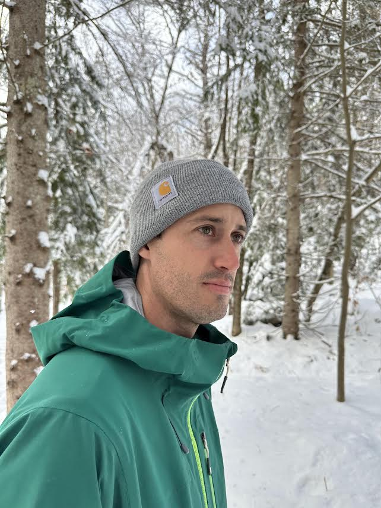
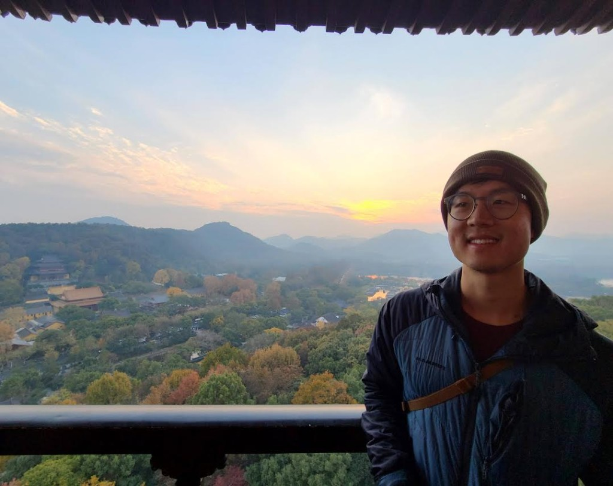
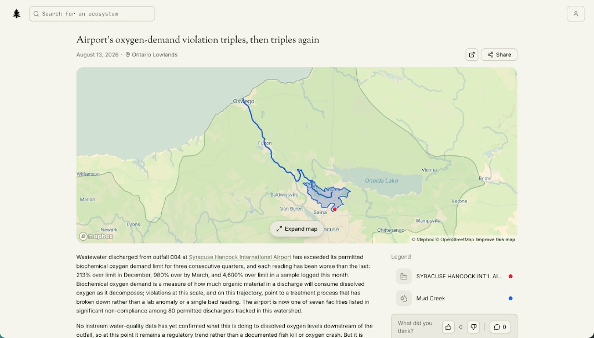
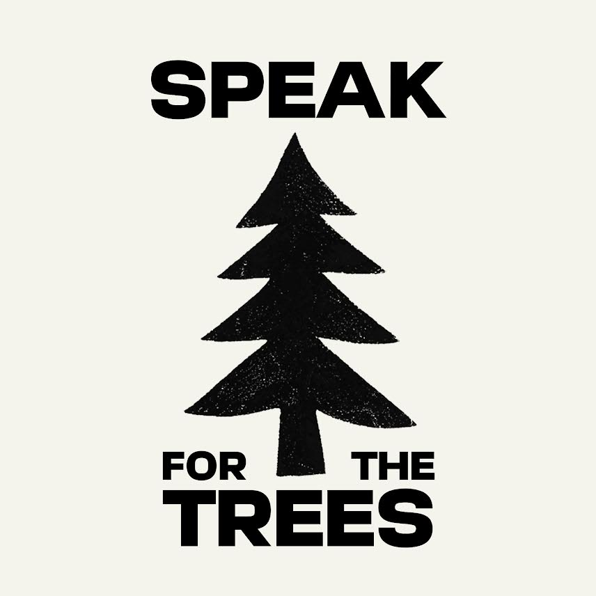
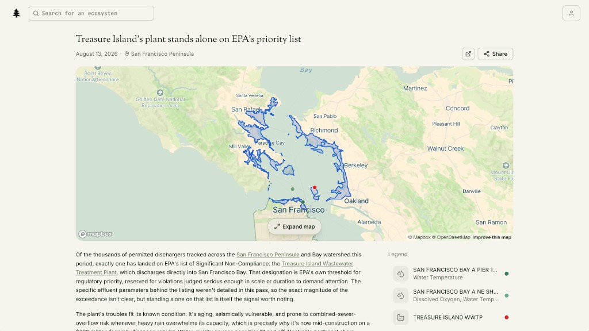

If Every Person Gets an Agent, Why Not Every Ecosystem?
Rob and Alan are three months into building Speak for the Trees, an agentic system that reads public environmental data and pushes updates on behalf of the ecosystems it covers. The big question underneath it: what happens when those updates become evidence?


A pipe at Syracuse airport has been putting more waste into the water than its permit allows. That's been true for three quarters running, and each time it's been worse: 213% over the limit in December, 980% by March, and 4,600% over in a sample logged this month.
Here's why that matters. Organic waste eats up the oxygen in water as it breaks down, and fish and insects need that oxygen to live. One bad reading could be a one-off, but three in a row, with each worse than the last, means something is clearly not working.

Nobody assigned a reporter to find this, or paid an expert to investigate. Nor did a regulator put out a press release. The report was written by an AI agent working on behalf of the Ontario Lowlands — a stretch of land that, until recently, had no way of telling anyone what was happening to it.
That's the idea behind Speak for the Trees. It started with a question its founders couldn't shake.
The question they kept coming back to
Rob is a product designer based in New York. Like everyone else, he'd spent months hearing about what AI was going to change. Somewhere in all that noise, he found himself circling something narrower: could any of this actually be a force for good for our ecosystems?
"We're all about to have AI agents working on our behalf — researching, negotiating, monitoring, filing things. So what if we gave that same capability to the living systems around us?"

The concept he landed on is a powerful one. And it's the bet Speak for the Trees is built on.
A fifty-year-old idea
In 1972, a law professor named Christopher Stone asked whether a forest could sue.
His essay was called Should Trees Have Standing? and the argument was that natural things should be able to go to court and defend their own interests. Plenty of people thought this was ridiculous. Stone's answer to them was hard to dismiss: the law already gives rights to things that can't speak. Corporations can't speak. Countries can't speak. Both have rights, and both have lawyers.
The essay reached one reader Stone had hoped for. Supreme Court Justice William O. Douglas quoted it in his dissent in Sierra Club v. Morton, arguing that a valley in the Sierra Nevada should be able to represent itself rather than rely on an environmental group to do it. The Sierra Club lost that case but the idea survived. Ecuador wrote the rights of nature into its constitution in 2008, and in 2017 New Zealand granted legal personhood to the Whanganui River, handing stewardship to local Māori after more than a century of advocacy.
But rights only work if somebody exercises them. That job usually falls to the people who live closest — often an Indigenous community with the longest relationship to the place.
And this is where it gets stuck. Being a guardian means being able to monitor, document, and prove what's happening. Because of the same history that made these communities guardians, they're frequently the ones with the fewest resources to do it. The right exists. The means to enforce it often doesn't.
That's the gap Rob and Alan are building into.
It starts with a newsletter
The long-term vision is that ecosystems hold legal standing and the practical ability to defend it. The starting point is a weekly email.
Subscribers to Speak for the Trees get grouped by ecoregion — a way of drawing boundaries around land that works the same way ecologically. These lines follow rivers, soil, and climate rather than state borders, so your ecoregion probably doesn't match any map you've seen. Each week, it tells you what happened to it.
Behind that sit 16 public data sources, a couple of them international and several hyper-local, including New York City's tree database. The system tracks species sightings, drought, air quality, and — most importantly — facilities with permits to discharge into local water, along with whether they're currently breaking the terms of those permits.
Starting with a newsletter is a deliberately modest move. It doesn't need anyone's permission. It just needs the data read carefully and reported, week after week, until what it's for becomes obvious. And the data has plenty to say.
More like a tip line than a verdict
The system is built to hand off rather than conclude.
For example, it recently alerted a spike in a particular species near Springfield, Massachusetts, and offered a guess about the cause. The guess wasn't verified, and the system didn't pretend otherwise — it gets things wrong, and Rob says so openly. What it did was send the finding to a local newspaper as a tip. A reporter went out, talked to people, checked with experts, worked out what was really going on, and wrote the story.
Not AI replacing environmental reporting, but a tip line running quietly across every ecoregion.
That's the model. Flagging things worth a look and suggesting who should take it. Local newsrooms have been hollowed out in exactly the places this kind of coverage used to live. An agent that never stops reading compliance databases isn't a substitute for a reporter. It's a very good way of telling an overstretched one where to look closely.
Rob thinks the stories with the most traction will be large-scale facilities breaking their permits — especially ones that have unpaid fines in places that lack local organizing efforts to respond to these hazards. A clear wrongdoing is the shape of the story that moves. But three months in, he's watching what gains traction and what doesn't.
What this could become
In an environmental court case, the hard part is often the proof — showing that damage happened, that someone caused it, and how bad it was. That work is slow, technical, and expensive, which means it favors whoever can afford it. A well-funded defendant can outlast a community that knows perfectly well what's happening to its water but can't document it to the standard a court demands.
A system that watches public data continuously and builds a lasting, sourced record of a place doesn't erase that imbalance. But it lowers the cost of an expensive component, for the people least able to pay it.

In another example, the San Francisco Bay report lays out that the bay is impaired, that thirty-five nearby facilities hold permits to discharge into it, and that seven are in violation — and then says plainly that no single one of them has been tied to the pollution reaching the bay. Every dot is on the page, but it doesn't draw the line (not yet, anyway) — and it can help local groups do that.
Which brings the question back to where it started. We're about to give every person a set of agents that act on their behalf. Rob and Alan are betting that we should give the same thing to ecosystems that can't speak for themselves. Three months in, subscribers span more than a hundred ecoregions around the world. Every field report stays free and public.
Help keep the trees speaking.
Speak for the Trees is running on a monthly funding goal and needs your help to continue its important work. Please donate what you can.